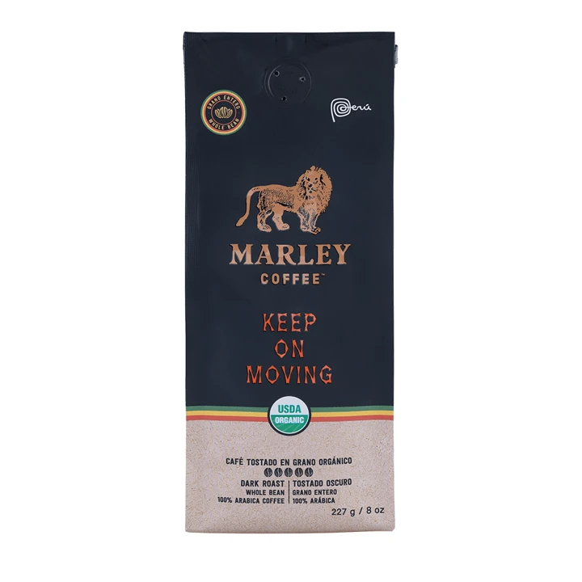
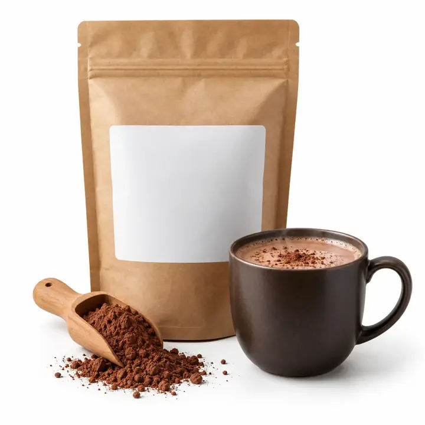
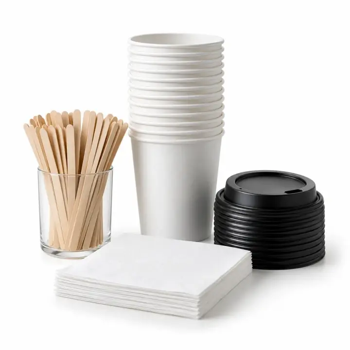

Marley Coffee · Empresas · Conveniencia
¿Cómo ofrecer café en una tienda de conveniencia?
Para evaluar café en una tienda de conveniencia, revisa espacio, flujo de clientes, bebidas que ofrecerás y quién se hará cargo del equipo. Compara capacidad, limpieza, insumos y reposición con la operación del local y confirma los términos por escrito.
Tu oferta · Tiendas de conveniencia
A tu ritmo de paso: café rápido para llevar.

Café al paso
Automática de autoservicio
80 a 300 tazas al día
En comodato: Marley presta la máquina y tú compras los insumos. Modelo, mínimo mensual y condiciones a confirmar con tu ejecutivo.
Productos del pack

Café en grano orgánico8 × 907 g$447.920 neto
Chocolate10 × 1 kg$169.900 neto
Vaso 9 + tapa500 de cada uno$94.000 neto- Vaso 14 + tapa500 de cada uno$107.500 neto
- Azúcar y stevia en sobresFormato a confirmar$58.000 neto
- Revolvedores y servilletasFormato a confirmar$32.000 neto
Referencia: la cotización completa de Marley del 19-oct-2026, con todas las líneas, suma $1.491.220 neto con kit y filtro.
Condiciones a confirmar
- Compra mínima mensual: a confirmar.
- Plazo de entrega: a confirmar.
- Compatibilidad de insumos con la máquina: a confirmar.
Precios netos referenciales, de la cotización de Marley del 19-oct-2026. Los confirma tu ejecutivo.
Cómo funciona la evaluación
Cómo funciona la evaluación
- Mapea el punto de venta: Mide el espacio, tránsito, conexiones y visibilidad del área de café.
- Elige el formato de atención: Define preparación asistida o autoservicio y las tareas de limpieza y reposición.
- Ajusta al flujo: Estima consumo por horario y revisa que el equipo y los insumos correspondan al local.
Compatibilidad, disponibilidad, servicios, soporte y condiciones comerciales se confirman para cada operación en una propuesta.
Qué comparar
Qué comparar
| Local | Espacio, tránsito, conexiones y seguridad. |
|---|---|
| Preparación | Autoservicio o atención y bebidas previstas. |
| Abastecimiento | Consumo, plazo confirmado y reserva. |
Preguntas habituales de compradores
Preguntas habituales de compradores
¿Qué máquina de café sirve para un minimarket?
Depende del espacio, el flujo, el menú y la forma de atención; compara esos datos con la ficha del modelo.
¿Cómo organizo la reposición de café?
Multiplica el consumo diario promedio por el plazo confirmado y suma la reserva que definas.
¿Qué requisitos de instalación debo revisar?
Consulta conexiones, espacio, limpieza, seguridad del área y las instrucciones del fabricante.